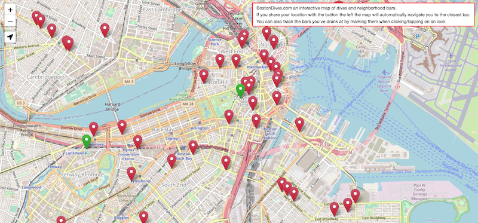
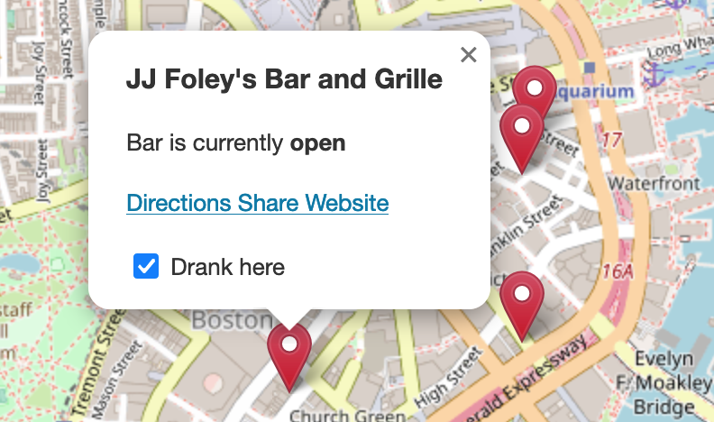
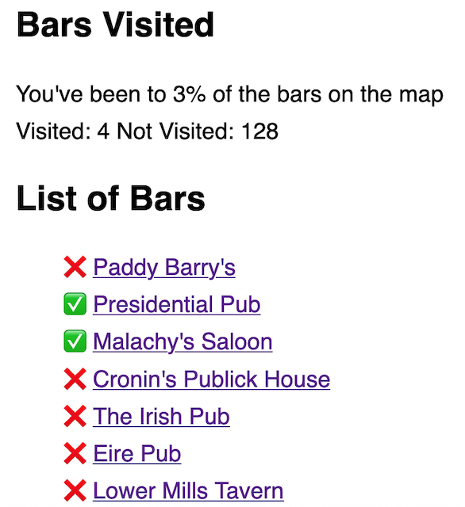

A website for quickly finding the best dive bars in Boston.

Tapping on the arrow icon under the zoom controls will prompt to share your location. This will automatically navigate you to the closest bar.

Bars also have notes on them for recommended orders and the cheapest bar

Restaurants with cheap greasy food are marked with green icons. Some of them also have cheap beer

Each bar has an option to track whether or not you've been there. No account needed to use.

If you're on your phone an added link for directions is added for each bar and restaurant

Stats
The stats page is for tracking your progress drinking at all the dive bars in Boston. You can also search for bars to get directions or see where they are located on the map. The page shows how many bars you've been too and marks off bars that you have or have not been to.

Contributing
Everything is hosted on GitHub. If there's something that you disagree with or think that I've missed something, open up a pull request against the locations.json file.
GitHub Repo
Contact
Send me an email here: contact@bostondives.com
Data Saved
The only data that's collected is bars that are viewed, and stats from the stats page. No personally identifying information is saved other than IP address and username. If you choose to share your location to find the closest bar that information is not saved and is only used in your browser.
Transfer Data
I have a new device and want to transfer my data. Click here
Theme
HOME